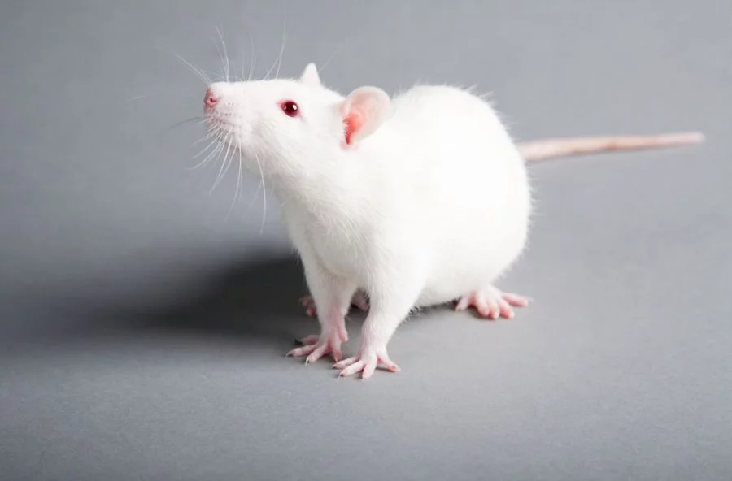

This is were you type your paragraph, or your websites info.It can be as long as you want.
Hello I am going to tell you how to make a website your website can be on any topic, I have made a website about myself and another about fancy rat care. Remember the three S's Save Save Often Save Early
Step 1: First you will have to open somewere to make your website, some places I use are; Notepad, VNC*, or Trinket*. * You have to make an acount for either of these programs. Once you have opened a place to code your wesite you must type the folowing: __________________________________________________________________________ !DOCTYPE html!
This is were you type your paragraph, or your websites info.It can be as long as you want.
Step 2:
Next lets add some pictures
To do this first go to google, search the image you want to use, make sure the picture you use is "Labeled for noncommercial reuse with modification"
to find image in this catagory easily just go to tools at the top of the page then click usage rights and pick "Labeled for noncommercial reuse with modification"
Then save the image as what ever you would like. open your webpage code, type in;
____________________________________________________________________
_____________________________________________________________________
Example: 
Step 3: Now for links If you are adding a link into yoour web site first you find the website you want to use then do as follows ___________________________________________________________ link text _______________________________________________________________